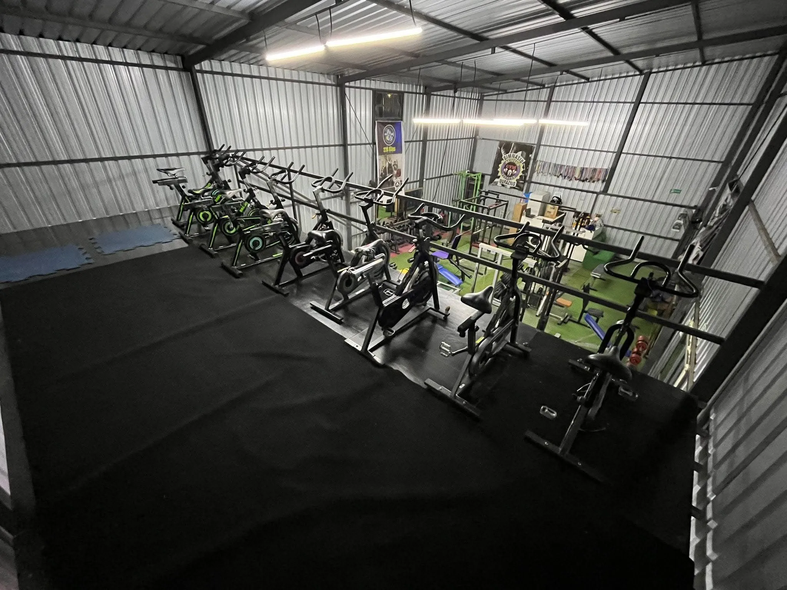
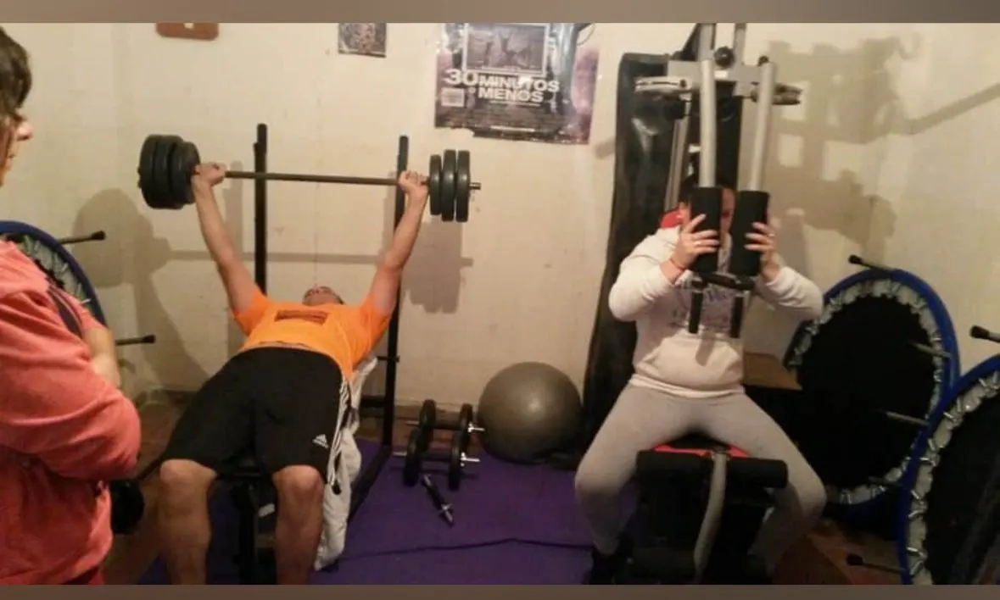

Nuestra Historia
Actitud Fitness comenzó hace más de una década cuando nuestro fundador, Rafael Barragan, con solo 18 años, soñaba con crear un espacio donde el entrenamiento y la comunidad fueran una sola cosa...


Conocé al Fundador
Rafael Barragan
Empezó entrenando a los 18 años en condiciones precarias, pero su pasión lo llevó a formarse como entrenador y competidor. Hoy, es el corazón de Actitud Fitness y guía con su experiencia a cada miembro que llega al gimnasio con ganas de superarse.
Ver más sobre Rafael →Nuestro Equipo de Profesores
Conocé a los entrenadores expertos que te acompañarán en cada paso.